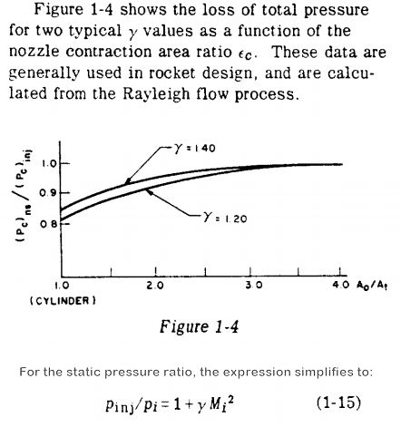
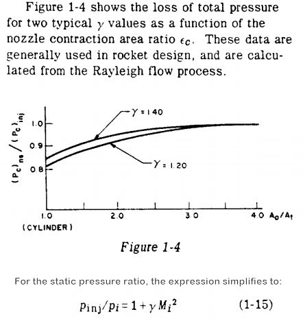

Finite Area Combustor¶
In a rocket engine, the ratio of chamber cross-sectional area to throat area is called the contraction ratio, CR.
Unless otherwise directed, CEA runs rocket calculations assuming an infinite CR.
For an infinite contraction ratio, the pressure at the injector face, Pcinj_face, is the same as the pressure in the chamber combustion end plenum, Pcomb_end.:
Pcinj_face = Pcomb_end (where: CR = infinite)
In a real chamber, however, as the chamber cross-sectional area gets smaller, (as CR gets closer to 1.0), the pressure drop from Pcinj_face to Pcomb_end increases.:
Pcinj_face > Pcomb_end (where: CR < infinite)
This pressure drop is called the Rayleigh line loss. It is the stagnation pressure loss associated with the heat transfer effects in a duct of constant area and is the locus of points on an enthalpy-entropy diagram defined by the momentum equation, continuity equation, and the equation of state.
A discussion of this phenomenon is included in the classic design manual Design of Liquid Propellant Rocket Engines by Huzel and Huang on page 6, which simplifies the ratio of the injector face pressure to the plenum pressure with the equation:
Pcinj_face / Pcomb_end = 1 + gamma * MachNumber**2
The above equation, equation (1-15) in Huzel and Huang is shown in the right-hand image below.
 

{kind=link}
The above graph shows the CEA/RocketCEA calculation of the Rayleigh line loss as well as a simple approximation equation for estimating that loss:
Pcinj_face/Pcomb_end = 1.0 + 0.54 / CR**2.2
Since different propellant combinations have nearly identical Rayleigh line loss (see above graph), it is often sufficient, for engineering purposes, to approximate the Rayleigh line loss with a simple correlating equation such as the one shown here.
This is especially convenient when designing to a known plenum pressure, Pcomb_end, and deriving the injector face pressure, Pcinj_face, that CEA and RocketCEA require as an input.
One could also get the chamber gamma and mach number from RocketCEA and plug those values into the equation from Huzel and Huang
CEA fac Option¶
The CEA program offers the option to calculate the Rayleigh line loss for you by using the fac option. (The above chart was generated with RocketCEA using the fac option).

A traditional CEA run that sets fac has an extra column of data called COMB END that indicates what the chamber plenum pressure, Pcomb_end, would be if the injector face pressure, INJECTOR pressure, were specified. An example of that extra column is shown below.:
INJECTOR COMB END THROAT EXIT
Pinj/P 1.0000 1.0692 1.7921 473.77
P, ATM 68.046 63.643 37.970 0.14363
T, K 3483.35 3467.55 3288.16 1441.62
RHO, G/CC 3.2038-3 3.0113-3 1.9141-3 1.7133-5
H, CAL/G -235.74 -253.44 -509.60 -2372.05
U, CAL/G -750.09 -765.27 -990.00 -2575.07
G, CAL/G -15090.3 -15057.2 -14547.5 -8526.66
S, CAL/(G)(K) 4.2644 4.2692 4.2692 4.2692
M, (1/n) 13.458 13.463 13.602 14.111
(dLV/dLP)t -1.02525 -1.02508 -1.01972 -1.00000
(dLV/dLT)p 1.4496 1.4485 1.3717 1.0001
Cp, CAL/(G)(K) 2.0951 2.0962 1.9277 0.7309
GAMMAs 1.1401 1.1398 1.1401 1.2387
SON VEL,M/SEC 1566.3 1562.3 1513.8 1025.8
MACH NUMBER 0.000 0.246 1.000 4.122
In RocketCEA the fac option is implemented by specifying the fac contraction ratio, fac_CR when creating a CEA_Obj. For example:
All calls to the ispObj will assume the input contraction ratio, fac_CR, and use the input Pc as the Pcinj_face.
For example, the above CEA output was generated with the code.
from rocketcea.cea_obj import CEA_Obj
ispObj = CEA_Obj( oxName='LOX', fuelName='LH2', fac_CR=2.5)
s = ispObj.get_full_cea_output( Pc=1000.0, MR=6.0, eps=40.0)
print( s )
The chamber plenum pressure, Pcomb_end, will be determined by applying the Rayleigh line loss to Pcinj_face.
It is also possible to calculate Pcinj_face / Pcomb_end for any contraction ratio using the following:
PinjOverPcomb = ispObj.get_Pinj_over_Pcomb( Pc=Pc, MR=MR, fac_CR=CR )
The graph in the 1st section above was created using this approach.
from rocketcea.cea_obj import CEA_Obj
from pylab import *
crL = [1.4+i*0.2 for i in range(19) ]
propL = [('N2O4','MMH',2.0), ('CLF5','N2H4',2.5),
('LOX','CH4',3.0), ('LOX','LH2',6.0)]
Pc = 500.0
est_pratL = [1.0 + 0.54 / cr**2.2 for cr in crL]
plot(crL, est_pratL, '.', label='Est Eqn = 1.0 + 0.54 / CR**2.2', markersize=16)
def make_pratL( oxName, fuelName, MR ):
C = CEA_Obj( oxName=oxName, fuelName=fuelName)
pratL = [C.get_Pinj_over_Pcomb( Pc=Pc, MR=MR, fac_CR=cr) for cr in crL]
plot(crL, pratL, label='%s/%s'%(oxName,fuelName), linewidth=2)
for (oxName, fuelName, MR) in propL:
make_pratL( oxName, fuelName, MR )
legend(loc='best')
grid(True)
title( 'Rayleigh Line Loss' )
xlabel( 'Contraction Ratio' )
ylabel( 'Pinj_face / Pplenum' )
savefig('compare_rayleigh.png', dpi=120)
show()
Specify Plenum Pressure¶
Since it is more common to specify a plenum pressure, Pcomb_end, and calculate an injector face pressure, Pcinj_face, The following script will use RocketCEA to calculate the required Pcinj_face that gives Pcomb_end.
"""
figure out Pcinj_face to get desired Pcomb_end (100 atm in example)
"""
from rocketcea.cea_obj import CEA_Obj
cr = 2.5 # contraction ratio
ispObj = CEA_Obj( oxName='LOX', fuelName='LH2', fac_CR=cr)
# Use 100 atm to make output easy to read
Pc = 100.0 * 14.6959
# use correlation to make 1st estimate of Pcinj_face / Pcomb_end
PinjOverPcomb = 1.0 + 0.54 / cr**2.2
# use RocketCEA to refine initial estimate
PinjOverPcomb = ispObj.get_Pinj_over_Pcomb( Pc=Pc * PinjOverPcomb, MR=6.0 )
# print results (noting that "COMB END" == 100.00 atm)
s = ispObj.get_full_cea_output( Pc=Pc * PinjOverPcomb, MR=6.0, eps=40.0)
print( s )
Output from the above script:
INJECTOR COMB END THROAT EXIT
Pinj/P 1.0000 1.0693 1.7944 479.16
P, ATM 106.93 100.00 59.593 0.22317
T, K 3532.34 3516.04 3327.30 1432.71
RHO, G/CC 4.9892-3 4.6890-3 2.9813-3 2.6786-5
H, CAL/G -235.74 -253.64 -512.51 -2378.56
U, CAL/G -754.77 -770.11 -996.59 -2580.33
G, CAL/G -15064.1 -15030.3 -14496.0 -8399.74
S, CAL/(G)(K) 4.1979 4.2026 4.2026 4.2026
M, (1/n) 13.524 13.529 13.659 14.111
(dLV/dLP)t -1.02259 -1.02243 -1.01737 -1.00000
(dLV/dLT)p 1.3977 1.3966 1.3245 1.0001
Cp, CAL/(G)(K) 1.9426 1.9433 1.7862 0.7293
GAMMAs 1.1431 1.1429 1.1435 1.2393
SON VEL,M/SEC 1575.6 1571.5 1521.9 1022.9
MACH NUMBER 0.000 0.246 1.000 4.140
System Performance¶
Choosing a contraction ratio is part of an overall system performance trade.
A smaller CR gives a smaller, lighter engine, but leads to a heavier pressurization system and perhaps heavier tankage.
Focusing on engine thrust to weight ratio completely ignores system implications.
That said, the most common contraction ratio is 2.5. Very large booster engines tend to have smaller CR, small engines tend to have larger CR.